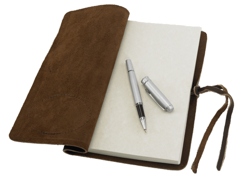
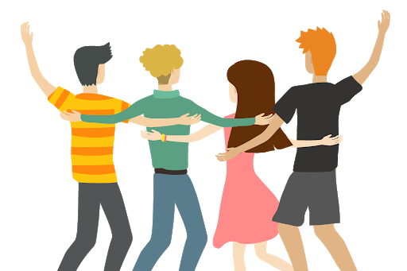

<ion-content>
  <ion-slides #welcomeSlider>
    <ion-slide>
      
      <h2>Welcome to Mindful</h2>
      <p>Mindful is a place where you can capture <b>Moments</b> you have throughout the day. A random thought, a conversation you had, a meal you shared with friends, anything.</p>
      <ion-button color="tertiary" fill="clear" (click)="next()">
        Makes sense
        <ion-icon name="chevron-forward"></ion-icon>
      </ion-button>
    </ion-slide>

    <ion-slide>
      
      <h2>People</h2>
      <p>When you're jotting down <b>Moments</b>, be sure to mention the <b>People</b> you shared it with. You'll want to look back and reminesce who you spent time with.</p>
      <ion-button color="tertiary" fill="clear" (click)="next()">
        I love my people
        <ion-icon name="chevron-forward"></ion-icon>
      </ion-button>
    </ion-slide>

    <ion-slide>
      
      <h2>Reminders</h2>
      <p>Sometimes we need a reminder to reach out to that friend that may have fallen through the cracks. Set how often you'd like to keep in contact with your <b>People</b> and we'll remind you.</p>
      <div class="margin-top">
        <ion-button color="tertiary" (click)="next()">
          Turn on notifications
          <ion-icon name="notifications"></ion-icon>
        </ion-button>
      </div>
      <ion-button color="medium" fill="clear" (click)="next()">
        Skip for now
        <ion-icon name="chevron-forward"></ion-icon>
      </ion-button>
    </ion-slide>

    <ion-slide>
      <h2>Now what?</h2>
      <p>Start collecting those <b>Moments</b> that happen throughout your day with the <b>People</b> closest to you.</p>
      <ion-button color="tertiary" fill="clear" (click)="done()">
        Let's do this
        <ion-icon name="chevron-forward"></ion-icon>
      </ion-button>
    </ion-slide>
  </ion-slides>
</ion-content>
